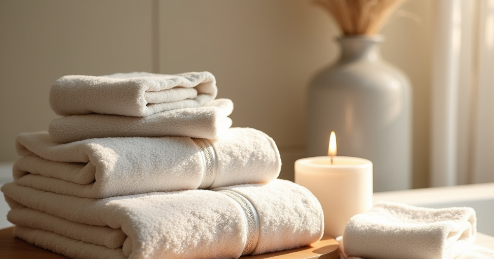

About This Journey
Nine days is the sweet spot for Seoul and Jeju together. Five days in Seoul gives you time to actually settle into the city — clinic day, culture, shopping — without rushing. Then a short flight to Jeju for four days of volcanic coastline, natural hot springs, and a completely different pace. This is a fully private experience: five-star hotels throughout, business class arrangements available, and every detail built around you — your treatment goals, your pace, your preferences.
Non-invasive treatments. One clinic day. Back to exploring by lunch.
Every treatment on this trip is non-invasive — no surgery, no cutting, no weeks of recovery. Korean clinics are built for stacking: in a single morning your group can combine multiple treatments across lifting, skin boosters, laser toning, and targeted concerns. The vast majority carry zero downtime. Clinic day is Day 3 — the rest of the trip is completely free.
Day by Day

Arrive at Incheon International Airport and transfer to your hotel in central Seoul. Check in, settle into the city's energy, and meet the evening with a welcome dinner together. Tonight is just about arriving well.

A full day exploring Seoul before clinic day. Gyeongbokgung Palace in the morning, the stone-walled lanes of Bukchon Hanok Village, Insadong's art market, and Namsan Tower in the afternoon. A traditional Korean group dinner to close the day — the best introduction to Korean cuisine done properly.

The day you came for. Morning consultations at our pre-vetted Gangnam clinic with licensed Korean dermatologists, followed by personalised treatment sessions. All treatments are non-invasive and tailored to each person in your group.
Treatments are fully personalised to your goals — anti-aging, skin boosters, lifting, laser toning, and targeted concerns like hand rejuvenation. Multiple treatments are stacked in one morning session for maximum results.
Clinic fees are paid directly to the clinic on the day. Most treatments carry little to no downtime — you will be back to the city by the afternoon.

A morning at a premium Korean hair and scalp spa for the signature 13-step scalp treatment — a deeply restorative ritual combining scalp analysis, exfoliation, massage, and nourishing ampoule infusion. Korean scalp care is in a league of its own, and this is the kind of treatment you cannot replicate at home. The afternoon is yours: Garosu-gil and Apgujeong for upscale browsing, Myeongdong for K-beauty shopping and street food, or Shinsegae for premium department store retail.

A full beauty and wellness day. Morning personal colour analysis — a professional session to identify your seasonal palette and discover exactly which tones work for your skin, hair, and eyes. Hugely popular in Seoul right now and genuinely useful for life after the trip. From there, a Korean makeup class with a professional makeup artist: learn the techniques behind the dewy, glass-skin finish that K-beauty is known for, using products you can take home. The evening closes with a traditional jjimjilbang — saunas, mineral pools, and the kind of deep rest Seoul locals swear by — before a farewell dinner as your last night in the city.

A slow morning for any final K-beauty shopping before a short domestic flight to Jeju Island. The flight takes just over an hour. Check into your coastal hotel and spend the evening walking the volcanic shoreline — your first sense of just how different Jeju is from Seoul.

Seongsan Ilchulbong — the iconic volcanic crater rising out of the sea, a UNESCO World Heritage Site and one of Jeju's most dramatic landscapes. In the afternoon, watch the legendary haenyeo: Jeju's famed women free-divers who harvest from the sea without equipment, carrying on an ancient tradition passed between generations. A fresh seafood dinner by the harbor to close the day.

Hyeopjae Beach in the morning — Jeju's clearest water and white sand, framed by Hallasan in the distance. A walk through Hallasan National Park, Korea's highest peak and a landscape that feels entirely unlike anywhere on the mainland. Volcanic spring baths in the afternoon — Jeju's mineral-rich water, genuinely good for the skin and a fitting end to the treatment chapter of the trip.

A slow farewell breakfast with ocean views before transfer to Jeju International Airport. You leave with better skin, a carry-on full of K-beauty finds, and a trip that was genuinely different from anything you could have done closer to home.
What's Included
Available Wellness Experiences
The following experiences can be included in your custom package — pricing is confirmed when we build your quote.
Not Included
Like this itinerary? Share it with your group.